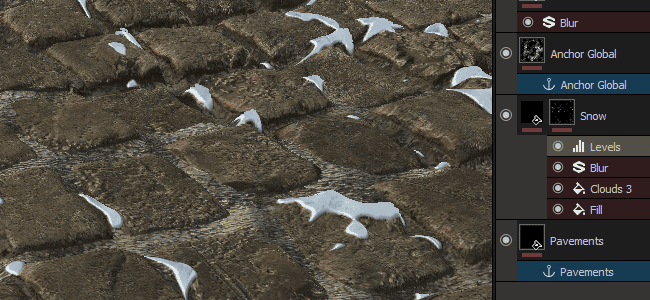

Substance Painter 2017.2 introduces a new powerful feature via the Anchor point system. It allows to create more advanced configurations in the layer stack which opens up a lot of new possibilities.
Release date : 27 July 2017

A new effect type has been added to Substance Painter, next to the already existing such as Filter and Level you can now find the new Anchor point. This new effect allow to define a location in the layer stack that can then be referenced across the rest of the project in any other layers. This allow for example to use the height information from a layer into the mask of a layer just above this one, allowing a more natural blending (as illustrated by the gif above).
Because the Anchor works as an effect, in can be created in many situations : the content of a layer, the mask and even as a pass-through filter. The effect also work even if the layer where it is located is disabled. Note that the Anchor define only a location, not what you can retrieve from it. This information is defined where the reference to the anchor is created.
For more technical details and examples, see the dedicated page : Anchor Point
Alongside the new Anchor point effect, we also worked on :
The new features are covered in details in our latest videos :
(Released 27 July 2017)
Added :
Fixed :